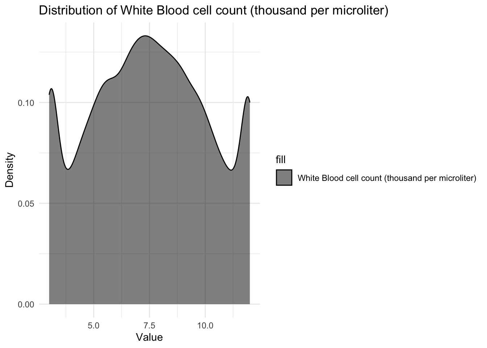

library(tidyverse)
library(ggplot2)
knitr::opts_chunk$set(echo = TRUE, warning=FALSE, message=FALSE)Final Project: Fnu Avinesh Krishnan
final_Project
Final Project writeup
Part 1. Introduction
Project Topic: The project aims to analyze factors of a patient suffering from a particular genetic disorder based on their medical record containing various information about the patient.
General Research Questions: What are the major conditions that help in early diagnosis of a genetic disorder in a patient? Are these factors inter-dependent on each other?
Dataset Description:
The genome and genetics dataset is collected by the National Center for Biotechnology Information (NCBI). The dataset includes patients with various genetic disorders, and the genetic disorders can be broadly categorized into three groups: mitochondrial genetic inheritance disorders, single-gene inheritance diseases, and multifactorial genetic inheritance disorders. These genetic disorders are just a few examples of the conditions that are included in the dataset.
Unit of Analysis: Each row represents classified medicial information like Age, Maternal and Paternal gene, Blood cell count, Respiratory and Heart rate, Test results, Previous abortions, Presence of symptoms, Birth defects and the Genetic disorder of a particular patient.
My study aims to analyse the relationship between different genetic factors, extracting insights based on correlation between medical precursors and test results, and predict the specific genetic disorder and its subclass for each patient based on their medical information.
Part 2. Background of the Topic/Literature Review
The exponential growth of the global population has resulted in a strain on essential resources such as healthcare, food, and shelter, which in turn has led to an increase in the incidence of genetic disorders. Genetic disorders are health conditions that typically result from DNA mutations or changes in the overall structure or number of chromosomes. Hereditary illnesses are becoming more prevalent due to insufficient awareness regarding the necessity of genetic testing. Tragically, such illnesses frequently result in the premature death of children, underscoring the vital significance of genetic testing during pregnancy.
Part 3. Dataset Introduction
The dataset includes patients with various genetic disorders, and the objective is to predict the specific genetic disorder and its subclass for each patient based on their medical information. Some of the disorder subclasses present in the dataset are Leigh syndrome, which is a rare inherited neurometabolic disorder, mitochondrial myopathy, which is a genetic disorder that affects the muscles and other organs that require a lot of energy, cystic fibrosis, which is a progressive genetic disorder that affects the lungs, pancreas, and other organs, Tay-Sachs, which is a rare inherited disorder that progressively destroys nerve cells in the brain and spinal cord, and diabetes, which is a metabolic disorder characterized by high blood sugar levels. These disorder subclasses are just a few examples of the conditions that are included in the dataset, and our project aims to study the subclass for each patient based on their medical information and analysing the correlation between them to help in pre-emptive detection of the disease.
Part 4. Dataset Description
(Story) This dataset contains a total of 22083 rows and 45 columns and the descriptive information about each of the 45 features are given below:
- Patient Id: Represents the unique identification number of a patient
- Patient Age: Represents the age of a patient
- Genes in mother's side: Represents a gene defect in the patient's mother
- Inherited from father: Represents a gene defect in the patient's father
- Maternal gene: Represents a gene defect in the patient's maternal side of the family
- Paternal gene: Represents a gene defect in the patient's paternal side of the family
- Blood cell count (mcL): Represents the blood cell count of a patient
- Patient First Name: Represents a patient's first name
- Family Name: Represents a patient's family name or surname
- Father's name: Represents a patient's father's name
- Mother's age: Represents a patient's mother's name
- Father's age: Represents a patient's father's age
- Institute Name: Represents the medical institute where a patient was born
- Location of Institute: Represents the location of the medical institute
- Status: Represents whether a patient is deceased
- Respiratory Rate (breaths/min): Represents a patient's respiratory breathing rate
- Heart Rate (rates/min): Represents a patient's heart rate
- Test 1 to Test 5: Represents different (masked) tests that were conducted on a patient
- Parental consent: Represents whether a patient's parents approved the treatment plan
- Follow-up: Represents a patient's level of risk (how intense their condition is)
- Gender: Represents a patient's gender
- Birth asphyxia: Represents whether a patient suffered from birth asphyxia
- Autopsy shows birth defect (if applicable): Represents whether a patient's autopsy showed any birth defects
- Place of birth: Represents whether a patient was born in a medical institute or home
- Folic acid details (peri-conceptional): Represents the periconceptional folic acid supplementation details of a patient
- H/O serious maternal illness: Represents an unexpected outcome of labor and delivery that resulted in significant short or long-term consequences to a patient's mother
- H/O radiation exposure (x-ray): Represents whether a patient has any radiation exposure history
- H/O substance abuse: Represents whether a parent has a history of drug addiction
- Assisted conception IVF/ART: Represents the type of treatment used for infertility
- History of anomalies in previous pregnancies: Represents whether the mother had any anomalies in her previous pregnancies
- No. of previous abortion: Represents the number of abortions that a mother had
- Birth defects: Represents whether a patient has birth defects
- White Blood cell count (thousand per microliter): Represents a patient's white blood cell count
- Blood test result: Represents a patient's blood test results
- Symptom 1 to Symptom 5: Represents (masked) different types of symptoms that a patient had
- Genetic Disorder: Represents the genetic disorder that a patient has
- Disorder Subclass: Represents the subclass of the disorderCoding Component:
- Read the titanic dataset;
#read and get a overview of the data
library(readr)
data<-read_csv("/Users/avineshkrishnan/Desktop/FnuAvineshKrishnan_FinalProjectData/train_genetic_disorders.csv")
view(data)Descriptive information of the titanic dataset :
::: {.cell}
# Checking the dimensions of the data dim(data)::: {.cell-output .cell-output-stdout}
[1] 22083 45:::# checking the number of unique disorder sub classes present length(unique(data$`Disorder Subclass`))::: {.cell-output .cell-output-stdout}
[1] 10:::#printing out the first few examples head(data)::: {.cell-output-display}
::: :::
Conduct summary statistics of the dataset :
library(knitr)
# Displaying the summary of the Patients data in a table
summary_stats <- summary(data)
kable(summary_stats)| Patient Id | Patient Age | Genes in mother’s side | Inherited from father | Maternal gene | Paternal gene | Blood cell count (mcL) | Patient First Name | Family Name | Father’s name | Mother’s age | Father’s age | Institute Name | Location of Institute | Status | Respiratory Rate (breaths/min) | Heart Rate (rates/min | Test 1 | Test 2 | Test 3 | Test 4 | Test 5 | Parental consent | Follow-up | Gender | Birth asphyxia | Autopsy shows birth defect (if applicable) | Place of birth | Folic acid details (peri-conceptional) | H/O serious maternal illness | H/O radiation exposure (x-ray) | H/O substance abuse | Assisted conception IVF/ART | History of anomalies in previous pregnancies | No. of previous abortion | Birth defects | White Blood cell count (thousand per microliter) | Blood test result | Symptom 1 | Symptom 2 | Symptom 3 | Symptom 4 | Symptom 5 | Genetic Disorder | Disorder Subclass | |
|---|---|---|---|---|---|---|---|---|---|---|---|---|---|---|---|---|---|---|---|---|---|---|---|---|---|---|---|---|---|---|---|---|---|---|---|---|---|---|---|---|---|---|---|---|---|
| Length:22083 | Min. : 0.000 | Length:22083 | Length:22083 | Length:22083 | Length:22083 | Min. :4.093 | Length:22083 | Length:22083 | Length:22083 | Min. :18.00 | Min. :20.00 | Length:22083 | Length:22083 | Length:22083 | Length:22083 | Length:22083 | Min. :0 | Min. :0 | Min. :0 | Min. :1 | Min. :0 | Length:22083 | Length:22083 | Length:22083 | Length:22083 | Length:22083 | Length:22083 | Length:22083 | Length:22083 | Length:22083 | Length:22083 | Length:22083 | Length:22083 | Min. :0 | Length:22083 | Min. : 3.000 | Length:22083 | Min. :0.000 | Min. :0.000 | Min. :0.0000 | Min. :0.0000 | Min. :0.0000 | Length:22083 | Length:22083 | |
| Class :character | 1st Qu.: 3.000 | Class :character | Class :character | Class :character | Class :character | 1st Qu.:4.763 | Class :character | Class :character | Class :character | 1st Qu.:26.00 | 1st Qu.:31.00 | Class :character | Class :character | Class :character | Class :character | Class :character | 1st Qu.:0 | 1st Qu.:0 | 1st Qu.:0 | 1st Qu.:1 | 1st Qu.:0 | Class :character | Class :character | Class :character | Class :character | Class :character | Class :character | Class :character | Class :character | Class :character | Class :character | Class :character | Class :character | 1st Qu.:1 | Class :character | 1st Qu.: 5.419 | Class :character | 1st Qu.:0.000 | 1st Qu.:0.000 | 1st Qu.:0.0000 | 1st Qu.:0.0000 | 1st Qu.:0.0000 | Class :character | Class :character | |
| Mode :character | Median : 7.000 | Mode :character | Mode :character | Mode :character | Mode :character | Median :4.899 | Mode :character | Mode :character | Mode :character | Median :35.00 | Median :42.00 | Mode :character | Mode :character | Mode :character | Mode :character | Mode :character | Median :0 | Median :0 | Median :0 | Median :1 | Median :0 | Mode :character | Mode :character | Mode :character | Mode :character | Mode :character | Mode :character | Mode :character | Mode :character | Mode :character | Mode :character | Mode :character | Mode :character | Median :2 | Mode :character | Median : 7.473 | Mode :character | Median :1.000 | Median :1.000 | Median :1.0000 | Median :0.0000 | Median :0.0000 | Mode :character | Mode :character | |
| NA | Mean : 6.975 | NA | NA | NA | NA | Mean :4.899 | NA | NA | NA | Mean :34.52 | Mean :41.94 | NA | NA | NA | NA | NA | Mean :0 | Mean :0 | Mean :0 | Mean :1 | Mean :0 | NA | NA | NA | NA | NA | NA | NA | NA | NA | NA | NA | NA | Mean :2 | NA | Mean : 7.485 | NA | Mean :0.592 | Mean :0.553 | Mean :0.5374 | Mean :0.4974 | Mean :0.4608 | NA | NA | |
| NA | 3rd Qu.:11.000 | NA | NA | NA | NA | 3rd Qu.:5.034 | NA | NA | NA | 3rd Qu.:43.00 | 3rd Qu.:53.00 | NA | NA | NA | NA | NA | 3rd Qu.:0 | 3rd Qu.:0 | 3rd Qu.:0 | 3rd Qu.:1 | 3rd Qu.:0 | NA | NA | NA | NA | NA | NA | NA | NA | NA | NA | NA | NA | 3rd Qu.:3 | NA | 3rd Qu.: 9.529 | NA | 3rd Qu.:1.000 | 3rd Qu.:1.000 | 3rd Qu.:1.0000 | 3rd Qu.:1.0000 | 3rd Qu.:1.0000 | NA | NA | |
| NA | Max. :14.000 | NA | NA | NA | NA | Max. :5.610 | NA | NA | NA | Max. :51.00 | Max. :64.00 | NA | NA | NA | NA | NA | Max. :0 | Max. :0 | Max. :0 | Max. :1 | Max. :0 | NA | NA | NA | NA | NA | NA | NA | NA | NA | NA | NA | NA | Max. :4 | NA | Max. :12.000 | NA | Max. :1.000 | Max. :1.000 | Max. :1.0000 | Max. :1.0000 | Max. :1.0000 | NA | NA | |
| NA | NA’s :2440 | NA | NA | NA | NA | NA’s :1072 | NA | NA | NA | NA’s :6790 | NA’s :6761 | NA | NA | NA | NA | NA | NA’s :3091 | NA’s :3125 | NA’s :3113 | NA’s :3121 | NA’s :3144 | NA | NA | NA | NA | NA | NA | NA | NA | NA | NA | NA | NA | NA’s :3126 | NA | NA’s :3118 | NA | NA’s :3128 | NA’s :3184 | NA’s :3075 | NA’s :3096 | NA’s :3127 | NA | NA |
# Displaying number of NAs in key variables Genetic Disorder and Disorder Subclass
sum(is.na(data$`Genetic Disorder`))[1] 3121sum(is.na(data$`Disorder Subclass`))[1] 3140Number of NA values in Genetic Disorder and Disorder Subclass are 3121 and 3140 respectively. We remove these at the start of our Data Pre-processing section since we don’t want to have missing values in our important features.
Part 5. Data Pre-processing and Analysis Plan
Specific questions :
How are features causing the genetic disorder related with one another?
How much variability is present in the important factors affecting the type of disease?
What is the distibution of categories within each feature influencing the disease?
What are the most common types of Genetic disorders children suffer from?
What are the most important parts of the medical information of a patient that helps in early diagnosis of the genetic disorder?
Pre-processing Plan:
Dropping null values from our main disease columns, Genetic Disorder and Disorder Subclass
Dropping features that are not important and do not affect our key disease columns
Analyzing unique values present in each feature to replace noisy values and null values with suitable values
Analysis Plan :
To answer the research questions mentioned above, I plan to conduct a combination of data analysis and visualization techniques.
Bar Charts and Histograms: I will create bar charts and histograms to visualize the relationship between categorical and numerical variables (e.g., Respiratory Rate, Heart Rate, Follow-up, Folic acid details), and their frequencies. This will allow for a quick study of distribution of sub categories of different features.
Scatter Plot: Scatter plots are valuable for analyzing the relationship between numerical variables, such as Patient Age, Blood cell count and White Blood cell count. They enable us to observe the dispersion of data points and determine if there is any correlation or trend between the variables.
Bivariate Visualization: Bivariate visualizations such as bar charts or stacked bar plots, are useful for comparing two variables. They allow us to visually examine the relationship between two categorical variables and allow us to derive insights about the inter-dependency of these features.
Part 6. Data Pre-processing and Visualization
Pre-processing plan: Task 1 and 2
# Dropping patients with missing values in 'Genetic Disorder' and 'Disorder Subclass' columns
data <- data[!is.na(data$`Genetic Disorder`) & !is.na(data$`Disorder Subclass`), ]My goal is to study the correlation of other features with these two disorder columns and NA values in these target variables would make that particular patient record useless. Hence I am removing rows which have null values in these target columns.
# Dropping specific columns from the dataset
data <- select(data, -c(`Patient Id`, `Family Name`, `Institute Name`, `Patient First Name`, `Father's name`, `Place of birth`, `Location of Institute`))Dropping features that do not affect the type of genetic disorder or subclass in any way and hence analyzing them isn’t of any use.
Pre-processing plan: Task 3 and Specific Questions 1, 2 and 3
# Checking unique values in 'Test 1', 'Test 2', 'Test 3', 'Test 4', and 'Test 5' columns
unique(data$`Test 1`)[1] 0 NAunique(data$`Test 2`)[1] NA 0unique(data$`Test 3`)[1] NA 0unique(data$`Test 4`)[1] 1 NAunique(data$`Test 5`)[1] 0 NA# Filling NA values with -99.0 in 'Test 1', 'Test 2', 'Test 3', 'Test 4', and 'Test 5' columns
data$`Test 1` <- ifelse(is.na(data$`Test 1`), -99.0, data$`Test 1`)
data$`Test 2` <- ifelse(is.na(data$`Test 2`), -99.0, data$`Test 2`)
data$`Test 3` <- ifelse(is.na(data$`Test 3`), -99.0, data$`Test 3`)
data$`Test 4` <- ifelse(is.na(data$`Test 4`), -99.0, data$`Test 4`)
data$`Test 5` <- ifelse(is.na(data$`Test 5`), -99.0, data$`Test 5`)Checking the unique values in the test results columns and replacing the missing values with an arbitrary negative value to identify them during future analysis.
# Creating density plots for `Patient Age`
ggplot(data, aes(x = `Patient Age`, fill = "Patient age")) +
geom_density(alpha = 0.5, color = "red") +
labs(x = "Value", y = "Density") +
ggtitle("Distribution of Patient Age") +
scale_fill_manual(values = "red", labels = "Patient age") +
theme_minimal()# Creating density plots for `Blood cell count (mcL)`
ggplot(data, aes(x = `Blood cell count (mcL)`, fill = "Blood cell count (mcL)")) +
geom_density(alpha = 0.5, color = "blue") +
labs(x = "Value", y = "Density") +
ggtitle("Distribution of Blood cell count (mcL)") +
scale_fill_manual(values = "blue", labels = "Blood cell count (mcL)") +
theme_minimal()# Creating density plots for `White Blood cell count (thousand per microliter)`
ggplot(data, aes(x = `White Blood cell count (thousand per microliter)`, fill = "White Blood cell count (thousand per microliter)")) +
geom_density(alpha = 0.5, color = "black") +
labs(x = "Value", y = "Density") +
ggtitle("Distribution of White Blood cell count (thousand per microliter)") +
scale_fill_manual(values = "black", labels = "White Blood cell count (thousand per microliter)") +
theme_minimal()
I can see that Patient age is uniformly distributed from 0-14 verifying the summary statistic that our dataset includes children in that particular age range only. Blood cell count has a normal distribution around 4.9mcL showing that most children have their blood cell count between 4mcL and 5.5mcL with majority of the children having the mean blood cell count of about 4.9mcL. I also observed that the White blood cell count is somewhat uniformly distributed between 3 and 12 thousand per microliter telling us all children have varying White blood cell count which reflects in their varying strength of immune system.
# Creating scatter plot of `Blood cell count (mcL)` against `White Blood cell count (thousand per #microliter)`
ggplot(data, aes(x = `White Blood cell count (thousand per microliter)`, y = `Blood cell count (mcL)`)) +
geom_point() +
labs(x = "White Blood cell count (thousand per microliter)", y = "Blood cell count (mcL)") +
ggtitle("White Blood cell count vs. Blood cell count") +
theme_minimal()From the scatter plot, it looks like there are lot of outliers for the white blood cells. I can see that the blood cell count and white blood cell count do not have a strong positive or negative correlation, therefore the symptoms of in the blood sample are probably not caused by the white blood cells(leukocytes).
# Create scatter plot of `Blood cell count (mcL)` against `Patient Age`
ggplot(data, aes(x = `Patient Age`, y = `Blood cell count (mcL)`)) +
geom_point() +
geom_smooth(method = "lm", se = FALSE, color = "red") +
labs(x = "Patient Age", y = "Blood cell count (mcL)") +
ggtitle("Patient Age vs. Blood cell count") +
theme_minimal()
# Create scatter plot of `White Blood cell count (thousand per microliter)` against `Patient Age`
ggplot(data, aes(x = `Patient Age`, y = `Blood cell count (mcL)`)) +
geom_point() +
geom_smooth(method = "lm", se = FALSE, color = "red") +
labs(x = "Patient Age", y = "Blood cell count (mcL)") +
ggtitle("Patient Age vs. Blood cell count") +
theme_minimal()
From the scatter plots, I can see that the patients are uniformly distributed over the range of blood cell counts and white blood cell counts giving us the idea that there is very little to no correlation between the Cell count and Age of the patient.
# Calculating mean values of `White Blood cell count (thousand per microliter)`,`Blood cell count #(mcL)` and `Patient Age`
mean_wbc <- mean(data$`White Blood cell count (thousand per microliter)`, na.rm = TRUE)
mean_bc <- mean(data$`Blood cell count (mcL)`, na.rm = TRUE)
mean_age <- floor(mean(data$`Patient Age`, na.rm = TRUE))
# Filling NA values with calculated mean values
data$`White Blood cell count (thousand per microliter)` <- ifelse(is.na(data$`White Blood cell count (thousand per microliter)`), mean_wbc, data$`White Blood cell count (thousand per microliter)`)
data$`Blood cell count (mcL)` <- ifelse(is.na(data$`Blood cell count (mcL)`), mean_bc, data$`Blood cell count (mcL)`)
data$`Patient Age` <- ifelse(is.na(data$`Patient Age`), mean_age, data$`Patient Age`)As the cell count and age are important features, I am replacing the missing cell counts with the mean value and the missing age with floor of the mean value since age needs to be a round number.
# Creating scatter plot of `Mother's age` against `Father's age`
ggplot(data, aes(x = `Father's age`, y = `Mother's age`)) +
geom_point() +
labs(x = "Father's age", y = "Mother's age") +
ggtitle("Father's age vs. Mother's age") +
theme_minimal()I wanted to see if there is any correlation between the parents age which is clearly not the case from the views of the scatter plot.
# Creating density plot with fitted normal distribution for Mother's age
ggplot(data, aes(x = `Mother's age`)) +
geom_density(fill = "blue", color = "black") +
stat_function(fun = dnorm, args = list(mean = mean(data$`Mother's age`, na.rm = TRUE), sd = sd(data$`Mother's age`, na.rm = TRUE)), color = "red", size = 1.5) +
labs(x = "Mother's age", y = "Density") +
ggtitle("Distribution of Mother's age") +
theme_minimal()
# Creating density plot with fitted normal distribution for Father's age
ggplot(data, aes(x = `Father's age`)) +
geom_density(fill = "blue", color = "black") +
stat_function(fun = dnorm, args = list(mean = mean(data$`Father's age`, na.rm = TRUE), sd = sd(data$`Father's age`, na.rm = TRUE)), color = "red", size = 1.5) +
labs(x = "Father's age", y = "Density") +
ggtitle("Distribution of Father's age") +
theme_minimal()
Both the parents age follows a normal distribution being symmetric about their mean value. This shows that majority of fathers are about 43 years old and majority of the mothers are about 35 years old.
# Calculating mean values
mean_mother_age <- floor(mean(data$`Mother's age`, na.rm = TRUE))
mean_father_age <- floor(mean(data$`Father's age`, na.rm = TRUE))
# Filling NA values with calculated mean values
data$`Mother's age` <- ifelse(is.na(data$`Mother's age`), mean_mother_age, data$`Mother's age`)
data$`Father's age` <- ifelse(is.na(data$`Father's age`), mean_father_age, data$`Father's age`)I am replacing the missing values in Father’s and Mother’s age with the floor of the mean value since age needs to be a round number.
# Creating density plot of `No. of previous abortion`
ggplot(data, aes(x = `No. of previous abortion`, y = ..density..)) +
geom_density(fill = "blue", color = "black") +
labs(x = "No. of previous abortion", y = "Density") +
ggtitle("Distribution of No. of previous abortion") +
theme_minimal()
#Checking unique values in `No. of previous abortion`
unique(data$`No. of previous abortion`)[1] NA 4 1 0 3 2I wanted to learn about the No. of previous abortion variable and from its density distribution, it is surprising to see that there are many children who have had 1,2,3 and even 4 abortions already. I want to check their Mothers age to get more insights.
# Creating scatter plot of `Mother's age` against `No. of previous abortion`
ggplot(data, aes(x = `No. of previous abortion`, y = `Mother's age`)) +
geom_point() +
labs(x = "No. of previous abortion", y = "Mother's age") +
ggtitle("Mother's age vs. No. of previous abortion") +
theme_minimal()
Wow, there are cases where patients with just 18 year old mothers have had 4 abortions. I want to look into the Father’s age of these patients.
# Filtering data for Mother's age equal to 18
filtered_data <- subset(data, `Mother's age` == 18)
# Creating count Bar graph of Father's age for these records
ggplot(filtered_data, aes(x = `Father's age`)) +
geom_bar() +
labs(x = "Father's age", y = "Count") +
ggtitle("Father's age for 18 year old mother") +
theme_minimal() +
theme(axis.text.x = element_text(angle = 90, vjust = 0.5, hjust = 1))
I can see that majority of fathers of these patients who have a 18 year old mother and have had a few abortions are about 41 years old.
# Calculating mean value of `No. of previous abortion`
mean_previous_abortion <- floor(mean(data$`No. of previous abortion`, na.rm = TRUE))
# Filling NA values with calculated mean value
data$`No. of previous abortion` <- ifelse(is.na(data$`No. of previous abortion`), mean_previous_abortion, data$`No. of previous abortion`)I am replacing the missing values in No. of previous abortion with the floor of the mean value since the variable needs to be a round number.
# Filling NA values of Symptoms columns with 0.0
data$`Symptom 1` <- ifelse(is.na(data$`Symptom 1`), 0.0, data$`Symptom 1`)
data$`Symptom 2` <- ifelse(is.na(data$`Symptom 2`), 0.0, data$`Symptom 2`)
data$`Symptom 3` <- ifelse(is.na(data$`Symptom 3`), 0.0, data$`Symptom 3`)
data$`Symptom 4` <- ifelse(is.na(data$`Symptom 4`), 0.0, data$`Symptom 4`)
data$`Symptom 5` <- ifelse(is.na(data$`Symptom 5`), 0.0, data$`Symptom 5`)I am replacing the missing values in the Symptoms columns with 0 since 0 represents no symptoms and 1 represents that symptoms are present and when the symptoms aren’t mentioned, it is safe to assume that they have no symptoms.
# Creating count Bar graphs for Categorical features
ggplot(data) +
geom_bar(aes(x = `Maternal gene`), fill = "blue") +
labs(title = "Count Plot: Maternal gene") +
theme_minimal()ggplot(data) +
geom_bar(aes(x = `Respiratory Rate (breaths/min)`), fill = "red") +
labs(title = "Count Plot: Respiratory Rate (breaths/min)") +
theme_minimal()ggplot(data) +
geom_bar(aes(x = `Heart Rate (rates/min`), fill = "green") +
labs(title = "Count Plot: Heart Rate (rates/min)") +
theme_minimal()ggplot(data) +
geom_bar(aes(x = `Parental consent`), fill = "orange") +
labs(title = "Count Plot: Parental consent") +
theme_minimal()ggplot(data) +
geom_bar(aes(x = `Follow-up`), fill = "purple") +
labs(title = "Count Plot: Follow-up") +
theme_minimal()ggplot(data) +
geom_bar(aes(x = `Folic acid details (peri-conceptional)`), fill = "pink") +
labs(title = "Count Plot: Folic acid details (peri-conceptional)") +
theme_minimal()
ggplot(data) +
geom_bar(aes(x = `H/O radiation exposure (x-ray)`), fill = "brown") +
labs(title = "Count Plot: H/O radiation exposure (x-ray)") +
theme_minimal()
ggplot(data) +
geom_bar(aes(x = `H/O substance abuse`), fill = "gray") +
labs(title = "Count Plot: H/O substance abuse") +
theme_minimal()ggplot(data) +
geom_bar(aes(x = `Assisted conception IVF/ART`), fill = "cyan") +
labs(title = "Count Plot: Assisted conception IVF/ART") +
theme_minimal()ggplot(data) +
geom_bar(aes(x = `History of anomalies in previous pregnancies`), fill = "yellow") +
labs(title = "Count Plot: History of anomalies in previous pregnancies") +
theme_minimal()From the Bar graphs of the counts of these categorical features, I can see which sub category of each variable accounts for the majority percentage. Since there are lot of parental consent, I will assume that tests conducted due to parents consent and there’s no way a kid will check up on his own.
# Dropping Parental consent column
data <- select(data, -c(`Parental consent`))Dropping the parental consent since most of them require it and the feature does not have influence on the type of genetic disorder.
# Checking unique values in columns
unique(data$`Maternal gene`)[1] "Yes" "No" NA unique(data$`Respiratory Rate (breaths/min)`)[1] "Normal (30-60)" "Tachypnea" NA unique(data$`Heart Rate (rates/min`)[1] "Normal" "Tachycardia" NA unique(data$`Follow-up`)[1] "High" "Low" NA unique(data$`Folic acid details (peri-conceptional)`)[1] "No" "Yes" NA unique(data$`H/O radiation exposure (x-ray)`)[1] "No" "Yes" "-" "Not applicable"
[5] NA unique(data$`H/O substance abuse`)[1] "No" NA "Not applicable" "-"
[5] "Yes" unique(data$`Assisted conception IVF/ART`)[1] "No" "Yes" NA unique(data$`History of anomalies in previous pregnancies`)[1] "Yes" "No" NA unique(data$`Birth asphyxia`)[1] NA "No record" "Not available" "Yes"
[5] "No" unique(data$`Gender`)[1] NA "Male" "Female" "Ambiguous"unique(data$`Birth defects`)[1] NA "Singular" "Multiple"unique(data$`Blood test result`)[1] NA "normal" "inconclusive"
[4] "slightly abnormal" "abnormal" unique(data$`H/O serious maternal illness`)[1] NA "No" "Yes"unique(data$`Inherited from father`)[1] "No" "Yes" NA unique(data$`Autopsy shows birth defect (if applicable)`)[1] "Not applicable" "No" "None" "Yes"
[5] NA unique(data$Status)[1] "Alive" "Deceased"unique(data$`Genes in mother's side`)[1] "Yes" "No" unique(data$`Paternal gene`)[1] "No" "Yes"# Filling NA with "No" in specific columns
data$`Maternal gene` <- ifelse(is.na(data$`Maternal gene`), "No", data$`Maternal gene`)
data$`Folic acid details (peri-conceptional)` <- ifelse(is.na(data$`Folic acid details (peri-conceptional)`), "No", data$`Folic acid details (peri-conceptional)`)
data$`H/O radiation exposure (x-ray)` <- ifelse(is.na(data$`H/O radiation exposure (x-ray)`), "No", data$`H/O radiation exposure (x-ray)`)
data$`H/O substance abuse` <- ifelse(is.na(data$`H/O substance abuse`), "No", data$`H/O substance abuse`)
data$`Assisted conception IVF/ART` <- ifelse(is.na(data$`Assisted conception IVF/ART`), "No", data$`Assisted conception IVF/ART`)
data$`History of anomalies in previous pregnancies` <- ifelse(is.na(data$`History of anomalies in previous pregnancies`), "No", data$`History of anomalies in previous pregnancies`)
data$`Birth asphyxia` <- ifelse(is.na(data$`Birth asphyxia`), "No", data$`Birth asphyxia`)
data$`H/O serious maternal illness` <- ifelse(is.na(data$`H/O serious maternal illness`), "No", data$`H/O serious maternal illness`)
data$`Inherited from father` <- ifelse(is.na(data$`Inherited from father`), "No", data$`Inherited from father`)
data$`Autopsy shows birth defect (if applicable)` <- ifelse(is.na(data$`Autopsy shows birth defect (if applicable)`), "No", data$`Autopsy shows birth defect (if applicable)`)
data$`Genes in mother's side` <- ifelse(is.na(data$`Genes in mother's side`), "No", data$`Genes in mother's side`)
data$`Paternal gene` <- ifelse(is.na(data$`Paternal gene`), "No", data$`Paternal gene`)# Function to calculate mode
Mode <- function(x) {
ux <- unique(x)
ux[which.max(tabulate(match(x, ux)))]
}
# Filling NA with the most frequent value in specific columns
data$`Respiratory Rate (breaths/min)` <- ifelse(is.na(data$`Respiratory Rate (breaths/min)`), Mode(data$`Respiratory Rate (breaths/min)`), data$`Respiratory Rate (breaths/min)`)
data$`Heart Rate (rates/min` <- ifelse(is.na(data$`Heart Rate (rates/min`), Mode(data$`Heart Rate (rates/min`), data$`Heart Rate (rates/min`)
data$`Follow-up` <- ifelse(is.na(data$`Follow-up`), Mode(data$`Follow-up`), data$`Follow-up`)
data$Gender <- ifelse(is.na(data$Gender), Mode(data$Gender), data$Gender)
data$`Birth defects` <- ifelse(is.na(data$`Birth defects`), Mode(data$`Birth defects`), data$`Birth defects`)
data$`Blood test result` <- ifelse(is.na(data$`Blood test result`), Mode(data$`Blood test result`), data$`Blood test result`)
data$Status <- ifelse(is.na(data$Status), Mode(data$Status), data$Status)I checked the values in these columns and replaced the missing values in the categorical features with “No” since that would be most apt if the illness wasn’t mentioned and with value of the most frequent value(mode) in the numerical features since these variables have a partial but not so strong impact on the genetic disorder.
# Replacing -99 with 0 in 'Test 1', 'Test 2', 'Test 3', 'Test 4', 'Test 5'
data$`Test 1`[data$`Test 1` == -99] <- 0
data$`Test 2`[data$`Test 2` == -99] <- 0
data$`Test 3`[data$`Test 3` == -99] <- 0
data$`Test 4`[data$`Test 4` == -99] <- 0
data$`Test 5`[data$`Test 5` == -99] <- 0
# Replacing -99 in 'White Blood cell count (thousand per microliter)' with median
data$`White Blood cell count (thousand per microliter)`[data$`White Blood cell count (thousand per microliter)` == -99] <- median(data$`White Blood cell count (thousand per microliter)`, na.rm = TRUE)
# Replacing '-99' with mode in 'Respiratory Rate (breaths/min)', 'Heart Rate (rates/min)'
data$`Respiratory Rate (breaths/min)`[data$`Respiratory Rate (breaths/min)` == '-99'] <- Mode(data$`Respiratory Rate (breaths/min)`)
data$`Heart Rate (rates/min`[data$`Heart Rate (rates/min` == '-99'] <- Mode(data$`Heart Rate (rates/min`)
# Replacing 'Normal (30-60)' with 'Normal' in 'Respiratory Rate (breaths/min)'
data$`Respiratory Rate (breaths/min)`[data$`Respiratory Rate (breaths/min)` == 'Normal (30-60)'] <- 'Normal'
# Replacing 'No record' with 'Not available' in 'Birth asphyxia'
data$`Birth asphyxia`[data$`Birth asphyxia` == 'No record'] <- 'Not available'
# Replacing 'None' and '-' with 'No' in 'Autopsy shows birth defect (if applicable)', 'H/O radiation exposure (x-ray)', 'H/O substance abuse'
data$`Autopsy shows birth defect (if applicable)`[data$`Autopsy shows birth defect (if applicable)` == 'None' | data$`Autopsy shows birth defect (if applicable)` == '-'] <- 'No'
data$`H/O radiation exposure (x-ray)`[data$`H/O radiation exposure (x-ray)` == 'None' | data$`H/O radiation exposure (x-ray)` == '-'] <- 'No'
data$`H/O substance abuse`[data$`H/O substance abuse` == 'None' | data$`H/O substance abuse` == '-'] <- 'No'I replaced arbitrary negative value(-99) in Test results feature with 0 since it implies that missing value equals a negative test which is the most appropriate to assume. I replaced the arbitrary value in White Blood cell count, Respiratory and heart rate with median and mode respectively as taking the central tendency value would make the most sense as these features are key for determining the type of genetic disorder. I replaced ‘Normal (30-60)’ with ‘Normal’, ‘No record’ with ‘Not available’, ‘None’ and ‘-’ with ‘No’ in Respiratory Rate, Birth asphyxia, Autopsy shows birth defect, H/O radiation exposure and H/O substance abuse respectively to maintain uniformity within the sub categories.
Specific Question 4
# Creating the count plot for `Disorder Subclass`
ggplot(data, aes(x = `Disorder Subclass`)) +
geom_bar(fill = "steelblue") +
labs(title = "Disorder Subclass", x = "Disorder Subclass", y = "Count") +
theme(axis.text.x = element_text(angle = 90, hjust = 1))From the Count plot for the subclasses of genetic disorder, I can say that most of the patients suffer from Leigh Syndrome while the least amount of children have Cancer.
Specific Question 5
# Creating the correlation graph between Maternal gene and Genetic Disorder
ggplot(data, aes(x = `Maternal gene`, fill = `Genetic Disorder`)) +
geom_bar() +
labs(x = "Maternal gene", y = "Count", fill = "Genetic Disorder") +
ggtitle("Maternal gene vs. Genetic Disorder") +
theme_minimal()
# Creating the correlation graph between Paternal gene and Genetic Disorder
ggplot(data, aes(x = `Paternal gene`, fill = `Genetic Disorder`)) +
geom_bar() +
labs(x = "Paternal gene", y = "Count", fill = "Genetic Disorder") +
ggtitle("Paternal gene vs. Genetic Disorder") +
theme_minimal()I observe that the maternal gene equally affects patients and is does not determine the type of genetic disorder whereas the absence of the paternal gene is seen in more cases of genetic abnormalities as compared to the patients containing the paternal gene.
# Creating the correlation graph between Respiratory Rate (breaths/min) and Genetic Disorder
ggplot(data, aes(x = `Respiratory Rate (breaths/min)`, fill = `Genetic Disorder`)) +
geom_bar() +
labs(x = "Respiratory Rate (breaths/min)", y = "Count", fill = "Genetic Disorder") +
ggtitle("Respiratory Rate (breaths/min) vs. Genetic Disorder") +
theme_minimal()
# Creating the correlation graph between Heart Rate (rates/min and Genetic Disorder
ggplot(data, aes(x = `Heart Rate (rates/min`, fill = `Genetic Disorder`)) +
geom_bar() +
labs(x = "Heart Rate (rates/min", y = "Count", fill = "Genetic Disorder") +
ggtitle("Heart Rate (rates/min) vs. Genetic Disorder") +
theme_minimal()
# Creating the correlation graph between Birth asphyxia and Genetic Disorder
ggplot(data, aes(x = `Birth asphyxia`, fill = `Genetic Disorder`)) +
geom_bar() +
labs(x = "Birth asphyxia", y = "Count", fill = "Genetic Disorder") +
ggtitle("Birth asphyxia vs. Genetic Disorder") +
theme_minimal()
I see that patients with a normal Respiratory breathing rate are in larger proportion when it comes to having a genetic disorder and hence I think that Respiratory rate may not be a primary factor for determining presence of a genetic disease. In the same manner, Heart rate and Birth asphyxia can also be taken out of consideration for early prognosis of a genetic disorder.
# Creating the correlation graph between H/O radiation exposure (x-ray) and Genetic Disorder
ggplot(data, aes(x = `H/O radiation exposure (x-ray)`, fill = `Genetic Disorder`)) +
geom_bar() +
labs(x = "H/O radiation exposure (x-ray)", y = "Count", fill = "Genetic Disorder") +
ggtitle("H/O radiation exposure (x-ray) vs. Genetic Disorder") +
theme_minimal()I observe that people with no radiation exposure also suffer from a lot of genetic disorders compared to people exposed to x-rays, and this condition may also not be a part of predicting the presence of a genetic disease in the patient.
# Creating the correlation graph between No. of previous abortion and Genetic Disorder
ggplot(data, aes(x = `No. of previous abortion`, fill = `Genetic Disorder`)) +
geom_bar() +
labs(x = "No. of previous abortion", y = "Count", fill = "Genetic Disorder") +
ggtitle("No. of previous abortion vs. Genetic Disorder") +
theme_minimal()From the correlation plot, patients with even a single previous abortion tend to have a higher chance of suffering from a genetic disorder, mainly Mitochondrial Inheritance disorders.
# Creating the correlation graph between Blood cell count (mcL) and Genetic Disorder
ggplot(data, aes(y = `Blood cell count (mcL)`, x = `Genetic Disorder`)) +
geom_point() +
labs(y = "Blood cell count (mcL)", x = "Genetic Disorder") +
ggtitle("Blood cell count (mcL) vs. Genetic Disorder") +
theme_minimal()From the graph, I see that patients with blood cell count within the full range suffer from genetic disorders which means that this feature may not be a key influence for causing genetic diseases in children.
Part 7. Conclusion and Discussion :
The analysis of the dataset has provided valuable insights into the relationship between various features and the presence of genetic disorders. The first step was to remove rows with missing values in the target columns, as these records would not contribute to the analysis. Additionally, irrelevant features that did not affect the type of genetic disorder were dropped, streamlining the dataset for further examination. The examination of the test results columns revealed unique values and the replacement of missing values with an arbitrary negative value for future identification. The analysis of patient age, blood cell count, and white blood cell count showcased interesting patterns. Patient age was found to be uniformly distributed within the range of 0 to 14 years, indicating that the dataset primarily consists of children in this age group. Blood cell count exhibited a normal distribution, with the majority of children having counts between 4mcL and 5.5mcL. Similarly, white blood cell count showed a somewhat uniform distribution between 3 and 12 thousand per microliter, reflecting the varying strength of the immune system among children.
Scatter plots were employed to explore potential correlations between variables. The scatter plot of blood cell count and white blood cell count indicated no strong positive or negative correlation, suggesting that the symptoms observed in the blood sample may not be caused by variations in white blood cell count. Additionally, scatter plots of blood cell count versus patient age and parental age exhibited no discernible correlation, indicating that these factors may have limited influence on the occurrence of genetic disorders.
The examination of parental age distributions revealed normal distributions for both fathers and mothers, with the majority of fathers being around 43 years old and mothers around 35 years old. Missing values in father’s and mother’s age were replaced with the floor of the mean value to maintain consistency and roundness in the age representation. Exploring the “No. of previous abortion” variable provided insights into the frequency of abortions among patients. It was observed that there were cases where patients with 18-year-old mothers had undergone multiple abortions. Furthermore, the examination of father’s age in these cases revealed that the majority of fathers were around 41 years old.
Count plots were used to analyze categorical features, such as parental consent, and revealed the predominance of specific categories. As a result, the parental consent feature was dropped, as it was determined to have little influence on the type of genetic disorder. Missing values in categorical features were replaced with “No” to represent the absence of the mentioned condition. Furthermore, specific values such as “Normal (30-60)” were replaced with simplified representations like “Normal” for consistency.
Count plots of the subclasses of genetic disorders highlighted the distribution of disorders within the dataset. Leigh Syndrome was found to be the most prevalent disorder, while Cancer accounted for the fewest cases. The analysis of the maternal gene revealed that it did not significantly influence the type of genetic disorder, whereas the absence of the paternal gene was more prevalent in cases of genetic abnormalities.
The examination of features such as respiratory rate, heart rate, radiation exposure, and birth asphyxia indicated that these factors may not be primary indicators of genetic disorders. Similarly, the correlation plot showed that patients with previous abortions tended to have a higher likelihood of suffering from genetic disorders, particularly those related to mitochondrial inheritance. Lastly, the scatter plot of blood cell count versus genetic disorders suggested that blood cell count may not be a key determining factor in the presence of genetic diseases.
In conclusion, the analysis of the dataset provided valuable insights into the relationship between various features and the occurrence of genetic disorders. The examination of unique values, data distributions, scatter plots, and count plots enabled a deeper understanding of the dataset and facilitated the identification of influential factors. These findings contribute to the field of genetic disorder research and can potentially aid in early prognosis and understanding the underlying mechanisms of these disorders
Part 8. Bibliography :
Dataset : https://www.kaggle.com/datasets/aibuzz/predict-the-genetic-disorders-datasetof-genomes
Programming Language : R